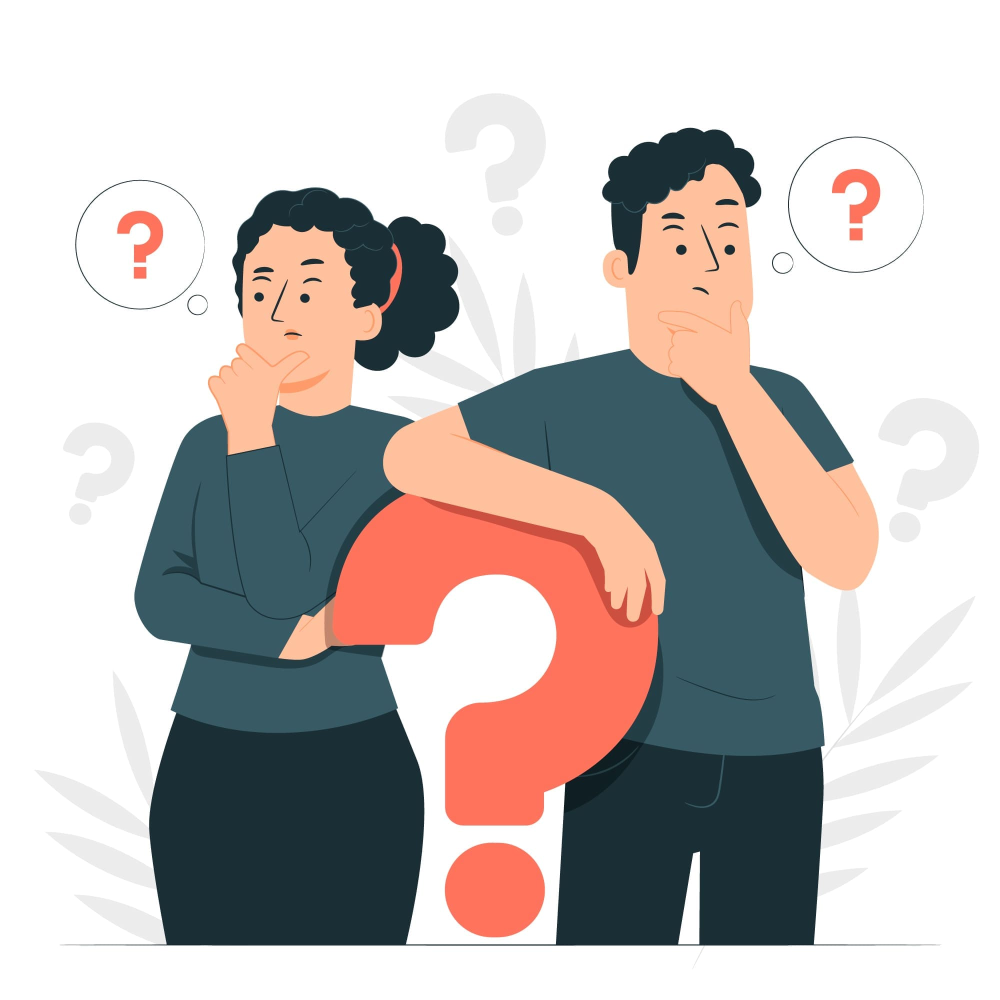
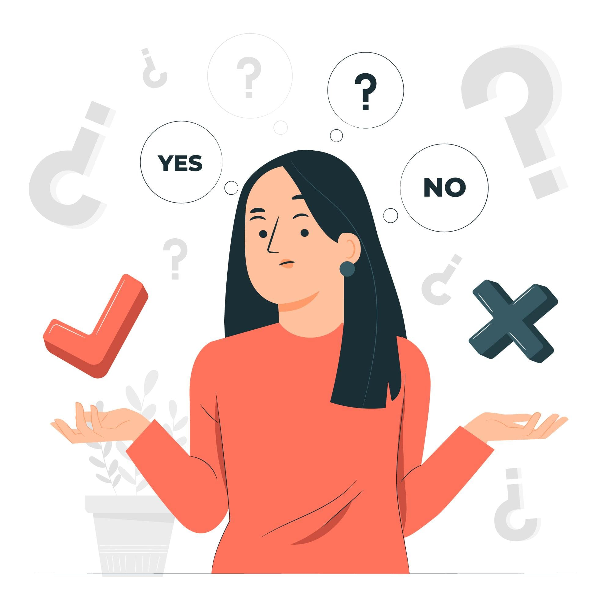

What is the LkSG?
- The LkSG, or Supply Chain Due Diligence Act, is a German law passed on June 11, 2021.
- It aims to enhance human and labor rights and environmental standards in international supply chains.
- This law sets a clear legal framework for businesses to fulfill their human rights due diligence obligations.


When does LkSG apply and to whom?
- The law applies from January 1, 2023, to German businesses with 3,000 or more employees.
- Starting from January 1, 2024, businesses with at least 1,000 employees in Germany must also comply.
How to prepare for LkSG?
- Affected businesses must align with human rights and due diligence duties in their supply chains.
- Establishing risk management plans and annual reporting of findings and actions are mandatory.
- Non-compliance can result in fines of up to 2% of annual turnover.

How to comply with the LkSG?
- Set up a risk management system based on UN Guiding Principles.
- Conduct risk analyses to identify potential human rights impacts.
- Minimize risks by taking actions to prevent human rights abuses.
- Transparently report impacts and enable complaints through a transparent procedure.